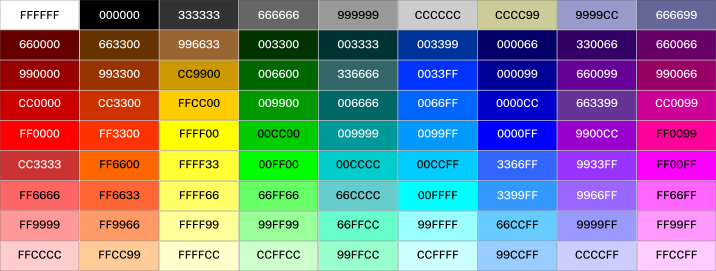
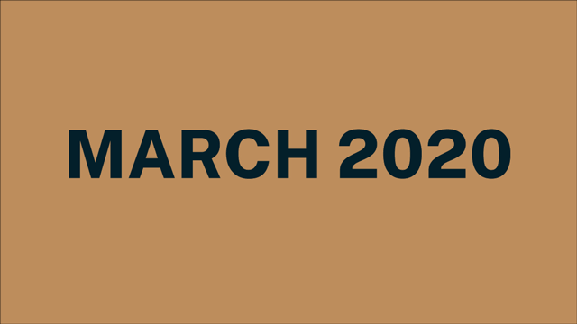

In the Time of COVID: A text and sentiment analysis of individual stories in the time of the SARS-CoV-2 pandemic
Introduction
If we consider data as the communication of an abstraction or measurement taken from the world (Kelleher & Tierney, 2018), the human race has been collecting data for millennia. Once acquired, this material is then cleaned and composed to illuminate information which may inactivate change. Therefore, it is no surprise that like humans, data have past stories that are often only revealed over time. Since the start of the SARS-CoV-2 pandemic, the world has monitored and tracked the global spread and the effects of the virus in data dashboards that display reported cases, death tolls, and economic costs. Yet, as devastating and life changing a period as this has been, no method of cataloguing the general sentiment of people exists.
Analysis of qualitative data is perhaps the most difficult type of data to analyze. Yet, when combined and reviewed with quantitative information, such as time, the inferences that may be drawn have the potential to illuminate the differences and similarities of so many things. The benefits of conducting this study during the COVID-19 pandemic are twofold: (1) providing a confidential outlet for individuals to cathartically recount a meaningful experience from this time unlike any other they may have experienced, and (2) the opportunity for the world to examine an aspect of the qualitative experience of the COVID-19 pandemic.
COVID-19 As We Know It
Charts such as the ones below, have become the standard for how we track cases, deaths, and for some mark time in the COVID-era. While informative, these charts do not provide qualitative information about the lives of the individuals surrounding the data.
Inspired by the Date Paintings of Japanese conceptual artist, On Kawara, and the (Süd-) Koreanischer Kalender / (South) Korean Calendar (1991) created by German conceptual artist, Hanne Darboven, this project used an online survey to collect pertinent dates and stories of fourteen (14) individuals during the COVID-19 pandemic to date (January 2020 - March 2021). Once collected, the data was cleaned, analyzed, and used to develop a data visualization that allows users to not ony trace reported cases and death tolls by date, but some personal sentiments and/or reflection of the people as well.
If elements of Kawara’s were modified and use to encode personal textual accounts of events throughout COVID-19, this qualitatively enriched information could provide new insight into the significance of the time-series events of the period. The power of personal stories is their emotive ability to captivate. In the time of COVID, many of the events that would allow one to evaluate the significance of a life lost, like a memorial service have been postponed indefinitely. Yet, as journalist Jonathan Freedland notes, “history suggests that even when the mortal danger of COVID passes, we may not indulge in a collective sorrow/remembering because unlike wars, pandemics do not follow linear story: clear heroes and villains with intent and motive” (Freedland, 2021). At a time when not only loss of life has been so great, but also loss of cultural traditions and ways of life, to mark and remember this period with only points in a time-series chart is to diminish the significance of what it is to be human.
Methodology
The project aims to address the following questions:
RQ: If the life of an individual is full of meaningful experiences connected to
times and
places,
how can text and sentiment
analysis illustrate these events?
RQ: Does color describe and/or shape the memory of an experience?
Using an online survey, the following information was confidentially collected from each
participant:
- Demographics (age range, gender,location at the time of their COVID memory).
- A description of events surrounding a day meaningful to them since the onset of
worldwide quarantine procedures invoked by the COVID-19 pandemic and why it is meaningful to
them.
- Three (3) words that they feel describes this day and COVID-era memory.
- A color picker (as shown below) of 81 web standard colors to select one (1) from.

- A description of their rationale for their particular color selection.
Procedure
The project included the following phases and procedures:
- Design. The data collection instrument,the online survey, was designed and
pilot tested by three (3) users.
- Analysis of
COVID-19 case related data Data from the COVID-19 Data
Repository by the Center
for Systems
Science and Engineering (CSSE) at Johns Hopkins University was collected and
analyzed.
- Participant Recruitment Adults, 18 years of age or older, were recruited
through
institutional mailing lists and social media platforms (i.e., Twitter, Instagram, Reddit)
over the
course of two weeks. The Gif below was featured in all digital recruitment media.

- DataCollection Using an online survey, a confidential sample of fourteen (14)
participants’
thoughts,emotions, and description of events
surrounding a day meaningful to them since the onset of worldwide quarantine procedures
invoked by the
COVID-19 pandemic was collected.
- Data Analysis Once cleaned of any and all identifying information, the data was
analyzed
with Python. All code, cleaned data, and
notebooks are stored in this GitHub
repository.
- Data Visualization A website was created in HTML and CSS to display data
visualizations created in Python and D3.js. The site and D3.js visualization (shown here) underwent two user tests--one asynchronous and virtual and
one in person.